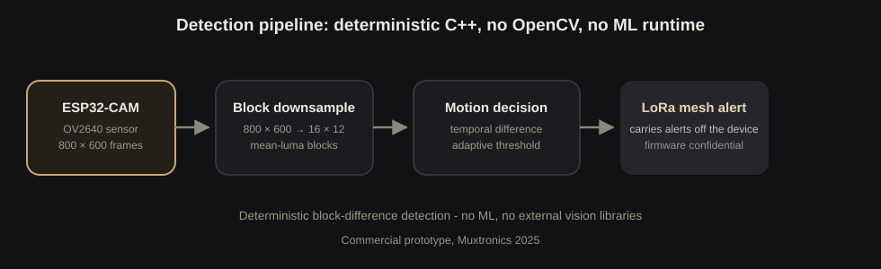

Deterministic C++ firmware for an ESP32-CAM intrusion detector, built under contract for Muxtronics in 2025: the camera sees motion and decides on-device, with alerts carried by the client's proprietary LoRa mesh.
No OpenCV, no TensorFlow Lite, no megabytes to spare. An ESP32-CAM has a camera, a modest processor, and very little memory, and the product had to run on exactly that, outdoors, for hours. The answer is a fully deterministic pipeline - the same frames always produce the same decision, which is what makes embedded firmware testable and trustworthy.

A note on measurements, because this portfolio takes them seriously: earlier versions of this page quoted field-trial accuracy figures that the repository could not substantiate, and they have been retracted - the repository documents the retraction. What stands behind the project instead: the public firmware, a live demo video, and a signed academic reference from Dr. Patrick Holthaus of the University of Hertfordshire. If field numbers are published in the future, they will come with the raw logs and the ground-truth method that produced them.